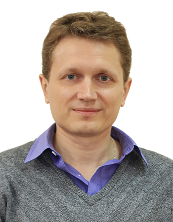

Кравчук Дмитрий Владимирович
Новосибирск
Разработчик frontEnd: html5, Javascript - backEnd: Symfony4
Новосибирск
Разработчик frontEnd: html5, Javascript - backEnd: Symfony4
| ИНСТИТУТ ЯДЕРНОЙ ФИЗИКИ СО АН СССР | 1992 | Автоматизация физических экспериментов mathlab |
| АРМИЯ РОССИИ | 1992 |
Старшина первой статьи, Морчасти погранвойск. Лаборант радиополигона засекречивающей аппаратуры связи и приборов. |
| 1993 | ||
| 1994 | ||
| ИНСТИТУТ ЯДЕРНОЙ ФИЗИКИ СО АН СССР | 1994 |
Управление крейтом КАМАК LabVIEW,
система контроля шаговыми двигателями для тестирования рентгеновских зеркал. Разработка приборов под ключ - чертежи autocad, разводка монтажных плат P-CAD, программатор микросхем, пайка, софт. Персональные страницы руководства, публикации |
| 1995 | ||
| 1996 | ||
| 1997 | ||
| ФЕДЕРАЛЬНОЕ ГОСУДАРСТВЕННОЕ БЮДЖЕТНОЕ УЧРЕЖДЕНИЕ НАУКИ ИНСТИТУТ ЯДЕРНОЙ ФИЗИКИ ИМ. Г.И. БУДКЕРА СИБИРСКОГО ОТДЕЛЕНИЯ РОССИЙСКОЙ АКАДЕМИИ НАУК | 1997 | |
| ЗАО 'СИБЛАЙН-КОМПЬЮТЕРНЫЕ СЕТИ' | 1997 |
Работа в веб студии - русскоязычный сайт Министерства Сельсгого хозяйства США, персональный сайт Карелина, сайт Сибирского Отделеня Единой России, сайт НАПО Чкаловский завод, сайт легкосплавных колес К&К, Новосибирскрыба и еще более 40 сайтов. Создание и обслуживание сайта Сибирской ярмарки sibfair.nsk.su (Apache + Perl), формы удаленной продажи стендов, фоторепортажи. Создание и обслуживание сайта фестиваля Internit (регистрация учасников, голосования, фотоотчеты) |
| 1998 | ||
| 1999 | ||
| 2000 | ||
| 2001 | ||
| ЗАКРЫТОЕ АКЦИОНЕРНОЕ ОБЩЕСТВО "СИБЛАЙН - КОМПЬЮТЕРНЫЕ СЕТИ" | 1998 | |
| 1999 | ||
| 2000 | ||
| 2001 | ||
| ОБЩЕСТВО С ОГРАНИЧЕННОЙ ОТВЕТСТВЕННОСТЬЮ "СИБЛАЙН ПЛЮС" | 2002 | |
| 2003 | ||
| ОТКРЫТОЕ АКЦИОНЕРНОЕ ОБЩЕСТВО "РЕГИОНАЛЬНЫЕ ИНФОРМАЦИОННЫЕ СЕТИ" | 2003 |
Веб студия перешла в подчинение ОАО "Rinet" (интернет провайдер) Содание системы продажи модемного доступа (Php+Mysql интеграция с пл. системой Assits) В последствии фирма стала дочерней компанией Сибирьтелеком, Ростелеком Создание и обслуживание мультирегионального сайта компании sibirtelecom.ru Создание и обслуживание ресурсов Sibnet.ru Новости info.sibnet.ru (Php+Mysql админка ExtJs3, Symfony 3) |
| 2004 | ||
| 2005 | ||
| 2006 | ||
| 2007 | ||
| 2008 | ||
| 2009 | ||
| 2010 | ||
| 2011 | ||
| ЗАКРЫТОЕ АКЦИОНЕРНОЕ ОБЩЕСТВО "ОБЩИЕ ТЕХНОЛОГИИ" | 2003 | |
| ОТКРЫТОЕ АКЦИОНЕРНОЕ ОБЩЕСТВО "РЕГИОНАЛЬНЫЕ ИНФОРМАЦИОННЫЕ СЕТИ" | 2011 | |
| 2012 | ||
| 2013 | ||
| 2014 | ||
| 2015 | ||
| 2016 | ||
| ОБЩЕСТВО С ОГРАНИЧЕННОЙ ОТВЕТСТВЕННОСТЬЮ "ПРО ДЕВЕЛОПМЕНТ" | 2017 |
Сайт по продаже доступа к каталогам заменителй автозапчастей + личный кабинет клиента -
laximo.ru Учавствую в разработке CRM компании Armtek (BpmOnline от Terrasoft С#, ExtJs) Верстка шаблонов для Java приложений на freemarker + Foundation for Emails Разработка на Angular, масштабирование проектов с использованием Docker Верстка шаблонов для рассылок, адаптивный html для мобильных устройств (Foundation for Emails) |
| 2018 | ||
| 2019 | ||
| 2020 | ||
| 2021 | ||
| 2022 | ||
| 2023 |